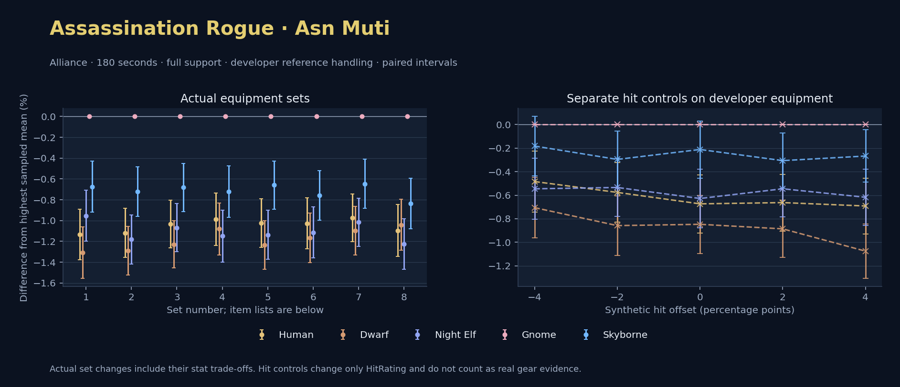

Alliance · Human / Dwarf / Night Elf / Gnome / Skyborne

No pet or guardian appears in the reference combat metrics. Reference: Human, developer equipment, 180 seconds and full support. Pet choices remain those of the developer build.
WoWSims developer · Mutilate
Unimplemented enchant or active set effects: [{"id": 1676, "pieces": 3, "effects": ["Restores 15 health per 5 sec."]}, {"id": 1676, "pieces": 5, "effects": ["When struck in combat, has a 5% chance to remove a Snare effect from yourself. Can only occur once every 60 sec."]}]
Unmeasured proc rates: [{"source": "set", "id": 1676, "pieces": 4, "kind": "ppm", "origin": "unknown"}, {"source": "item", "id": 19324, "name": "The Lobotomizer", "kind": "ppm", "origin": "vanilla"}, {"source": "enchant", "id": 1900, "name": "Enchant Weapon - Crusader", "kind": "ppm", "origin": "vanilla"}]
180 seconds, full support and original developer references. Hit below is generic sheet melee / spell hit; school and talent bonuses can be attached directly to spells.
| Race | DPS | Gap and interval | Generic hit | Replay |
|---|---|---|---|---|
| Gnome | 631.28 | +0.000% ± 0.000 | 13.4% / 13.4% | Native input · Website JSON |
| Skyborne | 627.02 | -0.675% ± 0.245 | 13.4% / 13.4% | Native input · Website JSON |
| Night Elf | 625.26 | -0.954% ± 0.244 | 13.4% / 13.4% | Native input · Website JSON |
| Human | 624.12 | -1.134% ± 0.242 | 13.4% / 13.4% | Native input · Website JSON |
| Dwarf | 623.03 | -1.307% ± 0.248 | 14.4% / 14.4% | Native input · Website JSON |
| Slot | Item | ID | Enchant |
|---|---|---|---|
| Head | Darkmantle Cap | 226829 | Lesser Arcane Amalgamation |
| Neck | Beads of Ogre Might | 22150 | |
| Shoulder | Theramore Pauldrons | 271955 | |
| Back | Earthweave Cloak | 21187 | Enchant Cloak - Agility |
| Chest | Darkmantle Tunic | 226825 | Enchant Chest - Living Stats |
| Wrist | Darkmantle Bracers | 226830 | Enchant Bracer - Agility |
| Hands | Darkmantle Grips | 226828 | Enchant Gloves - Greater Agility |
| Waist | Assassin's Waistguard | 272395 | |
| Legs | Darkmantle Pants | 226827 | Lesser Arcane Amalgamation |
| Feet | Darkmantle Footpads | 226831 | Enchant Boots - Minor Speed |
| Ring 1 | Don Julio's Band | 19325 | |
| Ring 2 | Might of Cenarius | 21189 | |
| Trinket 1 | Adaptive Combat Assistant | 272437 | |
| Trinket 2 | Rune of the Guard Captain | 19120 | |
| Main hand | The Lobotomizer | 19324 | Enchant Weapon - Crusader |
| Off hand | Scarlet Kris | 5267 | Enchant Weapon - Agility |
| Ranged / relic | Fahrad's Reloading Repeater | 22347 |
Published ranked alternatives · Published pre-raid
Recorded source replacements: [{"slot": "head", "from": 11735, "to": 252482, "publishedAlternativeRank": 1, "publishedEpDelta": -11.5, "reason": "First published alternative compatible with the current WoWSims database, class, faction and occupied slots."}, {"slot": "back", "from": 13340, "to": 18511, "publishedAlternativeRank": 1, "publishedEpDelta": -15.8, "reason": "First published alternative compatible with the current WoWSims database, class, faction and occupied slots."}, {"slot": "finger2", "from": 9533, "to": 285190, "publishedAlternativeRank": 3, "publishedEpDelta": -3.5, "reason": "First published alternative compatible with the current WoWSims database, class, faction and occupied slots."}, {"slot": "trinket2", "from": 13171, "to": 274759, "publishedAlternativeRank": 1, "publishedEpDelta": -1.6, "reason": "First published alternative compatible with the current WoWSims database, class, faction and occupied slots."}, {"slot": "ranged", "from": 2100, "to": 13023, "publishedAlternativeRank": 1, "publishedEpDelta": -4, "reason": "First published alternative compatible with the current WoWSims database, class, faction and occupied slots."}]
Unimplemented enchant or active set effects: [{"id": 142, "pieces": 2, "effects": ["10% chance of dealing 20 Nature damage on a successful melee attack."]}, {"id": 142, "pieces": 3, "effects": ["4% chance on melee attack of restoring 30 energy."]}]
Unmeasured proc rates: [{"source": "enchant", "id": 1900, "name": "Enchant Weapon - Crusader", "kind": "ppm", "origin": "vanilla"}, {"source": "enchant", "id": 1900, "name": "Enchant Weapon - Crusader", "kind": "ppm", "origin": "vanilla"}]
180 seconds, full support and original developer references. Hit below is generic sheet melee / spell hit; school and talent bonuses can be attached directly to spells.
| Race | DPS | Gap and interval | Generic hit | Replay |
|---|---|---|---|---|
| Gnome | 568.42 | +0.000% ± 0.000 | 8.0% / 8.0% | Native input · Website JSON |
| Skyborne | 564.32 | -0.721% ± 0.238 | 8.0% / 8.0% | Native input · Website JSON |
| Human | 562.06 | -1.119% ± 0.236 | 8.0% / 8.0% | Native input · Website JSON |
| Night Elf | 561.71 | -1.181% ± 0.236 | 8.0% / 8.0% | Native input · Website JSON |
| Dwarf | 561.10 | -1.288% ± 0.233 | 9.0% / 9.0% | Native input · Website JSON |
| Slot | Item | ID | Enchant |
|---|---|---|---|
| Head | Blue Suede Hat | 252482 | Lesser Arcane Amalgamation |
| Neck | Skibi's Pendant | 13089 | Enchant Necklace - Agility |
| Shoulder | Stormshroud Shoulders | 15058 | |
| Back | Shifting Cloak | 18511 | Enchant Cloak - Agility |
| Chest | Dawn Armor | 252483 | Enchant Chest - Greater Stats |
| Wrist | Deepfury Bracers | 13120 | Enchant Bracer - Agility |
| Hands | Stormshroud Gloves | 21278 | Enchant Gloves - Greater Agility |
| Waist | Assassin's Waistguard | 272395 | |
| Legs | Stormshroud Pants | 15057 | Lesser Arcane Amalgamation |
| Feet | Mongoose Boots | 18506 | Enchant Boots - Greater Agility |
| Ring 1 | Cutthroat's Signet | 272408 | |
| Ring 2 | Wyvern Heart Band | 285190 | |
| Trinket 1 | Adaptive Combat Assistant | 272437 | |
| Trinket 2 | Everlook Pathcarver | 274759 | |
| Main hand | Scarlet Kris | 5267 | Enchant Weapon - Crusader |
| Off hand | Heartseeker | 12783 | Enchant Weapon - Crusader |
| Ranged / relic | Eaglehorn Long Bow | 13023 |
Published one-slot hit alternative · Published pre-raid
One source-listed alternative; at least 80% of the source slot score retained. Reported hit selects the contrast; only native stats determine simulation outcomes. This is an experimental combination, not an endorsed best set.
Recorded source replacements: [{"slot": "head", "from": 11735, "to": 252482, "publishedAlternativeRank": 1, "publishedEpDelta": -11.5, "reason": "First published alternative compatible with the current WoWSims database, class, faction and occupied slots."}, {"slot": "back", "from": 13340, "to": 18511, "publishedAlternativeRank": 1, "publishedEpDelta": -15.8, "reason": "First published alternative compatible with the current WoWSims database, class, faction and occupied slots."}, {"slot": "finger2", "from": 9533, "to": 285190, "publishedAlternativeRank": 3, "publishedEpDelta": -3.5, "reason": "First published alternative compatible with the current WoWSims database, class, faction and occupied slots."}, {"slot": "trinket2", "from": 13171, "to": 274759, "publishedAlternativeRank": 1, "publishedEpDelta": -1.6, "reason": "First published alternative compatible with the current WoWSims database, class, faction and occupied slots."}, {"slot": "ranged", "from": 2100, "to": 13023, "publishedAlternativeRank": 1, "publishedEpDelta": -4, "reason": "First published alternative compatible with the current WoWSims database, class, faction and occupied slots."}]
Unimplemented enchant or active set effects: [{"id": 142, "pieces": 2, "effects": ["10% chance of dealing 20 Nature damage on a successful melee attack."]}, {"id": 142, "pieces": 3, "effects": ["4% chance on melee attack of restoring 30 energy."]}]
Unmeasured proc rates: [{"source": "enchant", "id": 1900, "name": "Enchant Weapon - Crusader", "kind": "ppm", "origin": "vanilla"}, {"source": "enchant", "id": 1900, "name": "Enchant Weapon - Crusader", "kind": "ppm", "origin": "vanilla"}]
180 seconds, full support and original developer references. Hit below is generic sheet melee / spell hit; school and talent bonuses can be attached directly to spells.
| Race | DPS | Gap and interval | Generic hit | Replay |
|---|---|---|---|---|
| Gnome | 572.09 | +0.000% ± 0.000 | 9.0% / 9.0% | Native input · Website JSON |
| Skyborne | 568.19 | -0.681% ± 0.231 | 9.0% / 9.0% | Native input · Website JSON |
| Human | 566.17 | -1.034% ± 0.229 | 9.0% / 9.0% | Native input · Website JSON |
| Night Elf | 565.98 | -1.068% ± 0.229 | 9.0% / 9.0% | Native input · Website JSON |
| Dwarf | 565.05 | -1.229% ± 0.228 | 10.0% / 10.0% | Native input · Website JSON |
| Slot | Item | ID | Enchant |
|---|---|---|---|
| Head | Blue Suede Hat | 252482 | Lesser Arcane Amalgamation |
| Neck | Skibi's Pendant | 13089 | Enchant Necklace - Agility |
| Shoulder | Stormshroud Shoulders | 15058 | |
| Back | Howler's Furs | 272414 | Enchant Cloak - Agility |
| Chest | Dawn Armor | 252483 | Enchant Chest - Greater Stats |
| Wrist | Deepfury Bracers | 13120 | Enchant Bracer - Agility |
| Hands | Stormshroud Gloves | 21278 | Enchant Gloves - Greater Agility |
| Waist | Assassin's Waistguard | 272395 | |
| Legs | Stormshroud Pants | 15057 | Lesser Arcane Amalgamation |
| Feet | Mongoose Boots | 18506 | Enchant Boots - Greater Agility |
| Ring 1 | Cutthroat's Signet | 272408 | |
| Ring 2 | Wyvern Heart Band | 285190 | |
| Trinket 1 | Adaptive Combat Assistant | 272437 | |
| Trinket 2 | Everlook Pathcarver | 274759 | |
| Main hand | Scarlet Kris | 5267 | Enchant Weapon - Crusader |
| Off hand | Heartseeker | 12783 | Enchant Weapon - Crusader |
| Ranged / relic | Eaglehorn Long Bow | 13023 |
Published one-slot hit alternative · Published pre-raid
One source-listed alternative; at least 80% of the source slot score retained. Reported hit selects the contrast; only native stats determine simulation outcomes. This is an experimental combination, not an endorsed best set.
Recorded source replacements: [{"slot": "head", "from": 11735, "to": 252482, "publishedAlternativeRank": 1, "publishedEpDelta": -11.5, "reason": "First published alternative compatible with the current WoWSims database, class, faction and occupied slots."}, {"slot": "back", "from": 13340, "to": 18511, "publishedAlternativeRank": 1, "publishedEpDelta": -15.8, "reason": "First published alternative compatible with the current WoWSims database, class, faction and occupied slots."}, {"slot": "finger2", "from": 9533, "to": 285190, "publishedAlternativeRank": 3, "publishedEpDelta": -3.5, "reason": "First published alternative compatible with the current WoWSims database, class, faction and occupied slots."}, {"slot": "trinket2", "from": 13171, "to": 274759, "publishedAlternativeRank": 1, "publishedEpDelta": -1.6, "reason": "First published alternative compatible with the current WoWSims database, class, faction and occupied slots."}, {"slot": "ranged", "from": 2100, "to": 13023, "publishedAlternativeRank": 1, "publishedEpDelta": -4, "reason": "First published alternative compatible with the current WoWSims database, class, faction and occupied slots."}]
Unimplemented enchant or active set effects: [{"id": 142, "pieces": 2, "effects": ["10% chance of dealing 20 Nature damage on a successful melee attack."]}, {"id": 142, "pieces": 3, "effects": ["4% chance on melee attack of restoring 30 energy."]}]
Unmeasured proc rates: [{"source": "enchant", "id": 1900, "name": "Enchant Weapon - Crusader", "kind": "ppm", "origin": "vanilla"}, {"source": "enchant", "id": 1900, "name": "Enchant Weapon - Crusader", "kind": "ppm", "origin": "vanilla"}]
180 seconds, full support and original developer references. Hit below is generic sheet melee / spell hit; school and talent bonuses can be attached directly to spells.
| Race | DPS | Gap and interval | Generic hit | Replay |
|---|---|---|---|---|
| Gnome | 561.70 | +0.000% ± 0.000 | 7.0% / 7.0% | Native input · Website JSON |
| Skyborne | 557.64 | -0.722% ± 0.248 | 7.0% / 7.0% | Native input · Website JSON |
| Human | 556.15 | -0.989% ± 0.252 | 7.0% / 7.0% | Native input · Website JSON |
| Dwarf | 555.63 | -1.081% ± 0.249 | 8.0% / 8.0% | Native input · Website JSON |
| Night Elf | 555.24 | -1.150% ± 0.249 | 7.0% / 7.0% | Native input · Website JSON |
| Slot | Item | ID | Enchant |
|---|---|---|---|
| Head | Blue Suede Hat | 252482 | Lesser Arcane Amalgamation |
| Neck | Skibi's Pendant | 13089 | Enchant Necklace - Agility |
| Shoulder | Stormshroud Shoulders | 15058 | |
| Back | Shifting Cloak | 18511 | Enchant Cloak - Agility |
| Chest | Timbermaw Tunic | 252484 | Enchant Chest - Greater Stats |
| Wrist | Deepfury Bracers | 13120 | Enchant Bracer - Agility |
| Hands | Stormshroud Gloves | 21278 | Enchant Gloves - Greater Agility |
| Waist | Assassin's Waistguard | 272395 | |
| Legs | Stormshroud Pants | 15057 | Lesser Arcane Amalgamation |
| Feet | Mongoose Boots | 18506 | Enchant Boots - Greater Agility |
| Ring 1 | Cutthroat's Signet | 272408 | |
| Ring 2 | Wyvern Heart Band | 285190 | |
| Trinket 1 | Adaptive Combat Assistant | 272437 | |
| Trinket 2 | Everlook Pathcarver | 274759 | |
| Main hand | Scarlet Kris | 5267 | Enchant Weapon - Crusader |
| Off hand | Heartseeker | 12783 | Enchant Weapon - Crusader |
| Ranged / relic | Eaglehorn Long Bow | 13023 |
Published ranked alternatives · Published pre-raid
Recorded source replacements: [{"slot": "back", "from": 13340, "to": 18511, "publishedAlternativeRank": 1, "publishedEpDelta": -15.8, "reason": "First published alternative compatible with the current WoWSims database, class, faction and occupied slots."}, {"slot": "finger2", "from": 9533, "to": 285190, "publishedAlternativeRank": 3, "publishedEpDelta": -3.5, "reason": "First published alternative compatible with the current WoWSims database, class, faction and occupied slots."}, {"slot": "ranged", "from": 2100, "to": 13023, "publishedAlternativeRank": 1, "publishedEpDelta": -4, "reason": "First published alternative compatible with the current WoWSims database, class, faction and occupied slots."}]
Unimplemented enchant or active set effects: [{"id": 142, "pieces": 2, "effects": ["10% chance of dealing 20 Nature damage on a successful melee attack."]}, {"id": 142, "pieces": 3, "effects": ["4% chance on melee attack of restoring 30 energy."]}]
Unmeasured proc rates: [{"source": "enchant", "id": 1900, "name": "Enchant Weapon - Crusader", "kind": "ppm", "origin": "vanilla"}, {"source": "enchant", "id": 1900, "name": "Enchant Weapon - Crusader", "kind": "ppm", "origin": "vanilla"}]
180 seconds, full support and original developer references. Hit below is generic sheet melee / spell hit; school and talent bonuses can be attached directly to spells.
| Race | DPS | Gap and interval | Generic hit | Replay |
|---|---|---|---|---|
| Gnome | 574.91 | +0.000% ± 0.000 | 8.3% / 8.3% | Native input · Website JSON |
| Skyborne | 571.12 | -0.660% ± 0.231 | 8.3% / 8.3% | Native input · Website JSON |
| Human | 569.04 | -1.022% ± 0.234 | 8.3% / 8.3% | Native input · Website JSON |
| Night Elf | 568.38 | -1.137% ± 0.235 | 8.3% / 8.3% | Native input · Website JSON |
| Dwarf | 567.82 | -1.235% ± 0.233 | 9.3% / 9.3% | Native input · Website JSON |
| Slot | Item | ID | Enchant |
|---|---|---|---|
| Head | Shadowcraft Cap | 16707 | Lesser Arcane Amalgamation |
| Neck | Skibi's Pendant | 13089 | Enchant Necklace - Agility |
| Shoulder | Stormshroud Shoulders | 15058 | |
| Back | Shifting Cloak | 18511 | Enchant Cloak - Agility |
| Chest | Dawn Armor | 252483 | Enchant Chest - Greater Stats |
| Wrist | Shadowcraft Bracers | 16710 | Enchant Bracer - Agility |
| Hands | Stormshroud Gloves | 21278 | Enchant Gloves - Greater Agility |
| Waist | Assassin's Waistguard | 272395 | |
| Legs | Stormshroud Pants | 15057 | Lesser Arcane Amalgamation |
| Feet | Shadowcraft Boots | 16711 | Enchant Boots - Greater Agility |
| Ring 1 | Cutthroat's Signet | 272408 | |
| Ring 2 | Wyvern Heart Band | 285190 | |
| Trinket 1 | Adaptive Combat Assistant | 272437 | |
| Trinket 2 | Molten Heart of the Mountain | 249470 | |
| Main hand | Scarlet Kris | 5267 | Enchant Weapon - Crusader |
| Off hand | Heartseeker | 12783 | Enchant Weapon - Crusader |
| Ranged / relic | Eaglehorn Long Bow | 13023 |
Published one-slot hit alternative · Published pre-raid
One source-listed alternative; at least 80% of the source slot score retained. Reported hit selects the contrast; only native stats determine simulation outcomes. This is an experimental combination, not an endorsed best set.
Recorded source replacements: [{"slot": "back", "from": 13340, "to": 18511, "publishedAlternativeRank": 1, "publishedEpDelta": -15.8, "reason": "First published alternative compatible with the current WoWSims database, class, faction and occupied slots."}, {"slot": "finger2", "from": 9533, "to": 285190, "publishedAlternativeRank": 3, "publishedEpDelta": -3.5, "reason": "First published alternative compatible with the current WoWSims database, class, faction and occupied slots."}, {"slot": "ranged", "from": 2100, "to": 13023, "publishedAlternativeRank": 1, "publishedEpDelta": -4, "reason": "First published alternative compatible with the current WoWSims database, class, faction and occupied slots."}]
Unimplemented enchant or active set effects: [{"id": 142, "pieces": 2, "effects": ["10% chance of dealing 20 Nature damage on a successful melee attack."]}, {"id": 142, "pieces": 3, "effects": ["4% chance on melee attack of restoring 30 energy."]}]
Unmeasured proc rates: [{"source": "enchant", "id": 1900, "name": "Enchant Weapon - Crusader", "kind": "ppm", "origin": "vanilla"}, {"source": "enchant", "id": 1900, "name": "Enchant Weapon - Crusader", "kind": "ppm", "origin": "vanilla"}]
180 seconds, full support and original developer references. Hit below is generic sheet melee / spell hit; school and talent bonuses can be attached directly to spells.
| Race | DPS | Gap and interval | Generic hit | Replay |
|---|---|---|---|---|
| Gnome | 568.80 | +0.000% ± 0.000 | 7.3% / 7.3% | Native input · Website JSON |
| Skyborne | 564.48 | -0.760% ± 0.238 | 7.3% / 7.3% | Native input · Website JSON |
| Human | 562.96 | -1.028% ± 0.245 | 7.3% / 7.3% | Native input · Website JSON |
| Night Elf | 562.47 | -1.114% ± 0.246 | 7.3% / 7.3% | Native input · Website JSON |
| Dwarf | 562.18 | -1.165% ± 0.238 | 8.3% / 8.3% | Native input · Website JSON |
| Slot | Item | ID | Enchant |
|---|---|---|---|
| Head | Shadowcraft Cap | 16707 | Lesser Arcane Amalgamation |
| Neck | Skibi's Pendant | 13089 | Enchant Necklace - Agility |
| Shoulder | Stormshroud Shoulders | 15058 | |
| Back | Shifting Cloak | 18511 | Enchant Cloak - Agility |
| Chest | Timbermaw Tunic | 252484 | Enchant Chest - Greater Stats |
| Wrist | Shadowcraft Bracers | 16710 | Enchant Bracer - Agility |
| Hands | Stormshroud Gloves | 21278 | Enchant Gloves - Greater Agility |
| Waist | Assassin's Waistguard | 272395 | |
| Legs | Stormshroud Pants | 15057 | Lesser Arcane Amalgamation |
| Feet | Shadowcraft Boots | 16711 | Enchant Boots - Greater Agility |
| Ring 1 | Cutthroat's Signet | 272408 | |
| Ring 2 | Wyvern Heart Band | 285190 | |
| Trinket 1 | Adaptive Combat Assistant | 272437 | |
| Trinket 2 | Molten Heart of the Mountain | 249470 | |
| Main hand | Scarlet Kris | 5267 | Enchant Weapon - Crusader |
| Off hand | Heartseeker | 12783 | Enchant Weapon - Crusader |
| Ranged / relic | Eaglehorn Long Bow | 13023 |
Published one-slot hit alternative · Published pre-raid
One source-listed alternative; at least 80% of the source slot score retained. Reported hit selects the contrast; only native stats determine simulation outcomes. This is an experimental combination, not an endorsed best set.
Recorded source replacements: [{"slot": "back", "from": 13340, "to": 18511, "publishedAlternativeRank": 1, "publishedEpDelta": -15.8, "reason": "First published alternative compatible with the current WoWSims database, class, faction and occupied slots."}, {"slot": "finger2", "from": 9533, "to": 285190, "publishedAlternativeRank": 3, "publishedEpDelta": -3.5, "reason": "First published alternative compatible with the current WoWSims database, class, faction and occupied slots."}, {"slot": "ranged", "from": 2100, "to": 13023, "publishedAlternativeRank": 1, "publishedEpDelta": -4, "reason": "First published alternative compatible with the current WoWSims database, class, faction and occupied slots."}]
Unimplemented enchant or active set effects: [{"id": 142, "pieces": 2, "effects": ["10% chance of dealing 20 Nature damage on a successful melee attack."]}, {"id": 142, "pieces": 3, "effects": ["4% chance on melee attack of restoring 30 energy."]}]
Unmeasured proc rates: [{"source": "enchant", "id": 1900, "name": "Enchant Weapon - Crusader", "kind": "ppm", "origin": "vanilla"}, {"source": "enchant", "id": 1900, "name": "Enchant Weapon - Crusader", "kind": "ppm", "origin": "vanilla"}]
180 seconds, full support and original developer references. Hit below is generic sheet melee / spell hit; school and talent bonuses can be attached directly to spells.
| Race | DPS | Gap and interval | Generic hit | Replay |
|---|---|---|---|---|
| Gnome | 578.61 | +0.000% ± 0.000 | 9.3% / 9.3% | Native input · Website JSON |
| Skyborne | 574.87 | -0.647% ± 0.236 | 9.3% / 9.3% | Native input · Website JSON |
| Human | 572.97 | -0.974% ± 0.229 | 9.3% / 9.3% | Native input · Website JSON |
| Night Elf | 572.72 | -1.017% ± 0.231 | 9.3% / 9.3% | Native input · Website JSON |
| Dwarf | 572.25 | -1.099% ± 0.233 | 10.3% / 10.3% | Native input · Website JSON |
| Slot | Item | ID | Enchant |
|---|---|---|---|
| Head | Shadowcraft Cap | 16707 | Lesser Arcane Amalgamation |
| Neck | Skibi's Pendant | 13089 | Enchant Necklace - Agility |
| Shoulder | Stormshroud Shoulders | 15058 | |
| Back | Howler's Furs | 272414 | Enchant Cloak - Agility |
| Chest | Dawn Armor | 252483 | Enchant Chest - Greater Stats |
| Wrist | Shadowcraft Bracers | 16710 | Enchant Bracer - Agility |
| Hands | Stormshroud Gloves | 21278 | Enchant Gloves - Greater Agility |
| Waist | Assassin's Waistguard | 272395 | |
| Legs | Stormshroud Pants | 15057 | Lesser Arcane Amalgamation |
| Feet | Shadowcraft Boots | 16711 | Enchant Boots - Greater Agility |
| Ring 1 | Cutthroat's Signet | 272408 | |
| Ring 2 | Wyvern Heart Band | 285190 | |
| Trinket 1 | Adaptive Combat Assistant | 272437 | |
| Trinket 2 | Molten Heart of the Mountain | 249470 | |
| Main hand | Scarlet Kris | 5267 | Enchant Weapon - Crusader |
| Off hand | Heartseeker | 12783 | Enchant Weapon - Crusader |
| Ranged / relic | Eaglehorn Long Bow | 13023 |
Published one-slot hit alternative · Published pre-raid
One source-listed alternative; at least 80% of the source slot score retained. Reported hit selects the contrast; only native stats determine simulation outcomes. This is an experimental combination, not an endorsed best set.
Recorded source replacements: [{"slot": "back", "from": 13340, "to": 18511, "publishedAlternativeRank": 1, "publishedEpDelta": -15.8, "reason": "First published alternative compatible with the current WoWSims database, class, faction and occupied slots."}, {"slot": "waist", "from": 227805, "to": 272395, "publishedAlternativeRank": 1, "publishedEpDelta": -6.4, "reason": "First published alternative compatible with the current WoWSims database, class, faction and occupied slots."}, {"slot": "finger2", "from": 17713, "to": 285190, "publishedAlternativeRank": 3, "publishedEpDelta": -16.4, "reason": "First published alternative compatible with the current WoWSims database, class, faction and occupied slots."}, {"slot": "ranged", "from": 2100, "to": 13023, "publishedAlternativeRank": 1, "publishedEpDelta": -4, "reason": "First published alternative compatible with the current WoWSims database, class, faction and occupied slots."}]
Unimplemented enchant or active set effects: [{"id": 142, "pieces": 2, "effects": ["10% chance of dealing 20 Nature damage on a successful melee attack."]}, {"id": 142, "pieces": 3, "effects": ["4% chance on melee attack of restoring 30 energy."]}]
Unmeasured proc rates: [{"source": "enchant", "id": 1900, "name": "Enchant Weapon - Crusader", "kind": "ppm", "origin": "vanilla"}, {"source": "enchant", "id": 1900, "name": "Enchant Weapon - Crusader", "kind": "ppm", "origin": "vanilla"}]
180 seconds, full support and original developer references. Hit below is generic sheet melee / spell hit; school and talent bonuses can be attached directly to spells.
| Race | DPS | Gap and interval | Generic hit | Replay |
|---|---|---|---|---|
| Gnome | 565.03 | +0.000% ± 0.000 | 6.3% / 6.3% | Native input · Website JSON |
| Skyborne | 560.31 | -0.835% ± 0.242 | 6.3% / 6.3% | Native input · Website JSON |
| Dwarf | 559.15 | -1.040% ± 0.245 | 7.3% / 7.3% | Native input · Website JSON |
| Human | 558.83 | -1.096% ± 0.249 | 6.3% / 6.3% | Native input · Website JSON |
| Night Elf | 558.10 | -1.226% ± 0.244 | 6.3% / 6.3% | Native input · Website JSON |
| Slot | Item | ID | Enchant |
|---|---|---|---|
| Head | Shadowcraft Cap | 16707 | Lesser Arcane Amalgamation |
| Neck | Skibi's Pendant | 13089 | Enchant Necklace - Agility |
| Shoulder | Stormshroud Shoulders | 15058 | |
| Back | Shifting Cloak | 18511 | Enchant Cloak - Agility |
| Chest | Dawn Armor | 252483 | Enchant Chest - Greater Stats |
| Wrist | Shadowcraft Bracers | 16710 | Enchant Bracer - Agility |
| Hands | Stormshroud Gloves | 21278 | Enchant Gloves - Greater Agility |
| Waist | Might of the Timbermaw | 19044 | |
| Legs | Stormshroud Pants | 15057 | Lesser Arcane Amalgamation |
| Feet | Shadowcraft Boots | 16711 | Enchant Boots - Greater Agility |
| Ring 1 | Cutthroat's Signet | 272408 | |
| Ring 2 | Wyvern Heart Band | 285190 | |
| Trinket 1 | Adaptive Combat Assistant | 272437 | |
| Trinket 2 | Molten Heart of the Mountain | 249470 | |
| Main hand | Scarlet Kris | 5267 | Enchant Weapon - Crusader |
| Off hand | Heartseeker | 12783 | Enchant Weapon - Crusader |
| Ranged / relic | Eaglehorn Long Bow | 13023 |
The same declared pool is available to every race. Each race keeps its best validation-sample set with its screening-selected racial policy. Separate samples confirm that choice, with fresh precision samples near the practical-loss boundary. Gaps use the highest sampled mean under that same duration, support and reference treatment as their reference. A zero reference gap does not certify a race; the main matrix also allows uncertainty in the leader.
| Pool | Seconds | Support | References | Race | DPS | Gap and interval | Racial policies / mana | Selected set | Generic hit: melee / spell | Replay |
|---|---|---|---|---|---|---|---|---|---|---|
| published-pre-raid | 60 | full | developer | Gnome | 630.52 | +0.000% ± 0.0005,000 iterations | developer / developer / developerMana waits 0.0s | published-rogue-assassination-alliance-cf86636fcbd34726-higher-hit | 9.3% / 9.3% | Input · Result · Stats |
| published-pre-raid | 60 | full | developer | Night Elf | 619.39 | -1.765% ± 0.1985,000 iterations | developer / developer / developerMana waits 0.0s | published-rogue-assassination-alliance-cf86636fcbd34726-higher-hit | 9.3% / 9.3% | Input · Result · Stats |
| published-pre-raid | 60 | full | developer | Skyborne | 614.91 | -2.476% ± 0.1915,000 iterations | developer / developer / developerMana waits 0.0s | published-rogue-assassination-alliance-cf86636fcbd34726-higher-hit | 9.3% / 9.3% | Input · Result · Stats |
| published-pre-raid | 60 | full | developer | Human | 613.07 | -2.769% ± 0.1915,000 iterations | developer / developer / developerMana waits 0.0s | published-rogue-assassination-alliance-cf86636fcbd34726-higher-hit | 9.3% / 9.3% | Input · Result · Stats |
| published-pre-raid | 60 | full | developer | Dwarf | 612.26 | -2.897% ± 0.1925,000 iterations | developer / developer / developerMana waits 0.0s | published-rogue-assassination-alliance-cf86636fcbd34726-higher-hit | 10.3% / 10.3% | Input · Result · Stats |
| published-pre-raid | 60 | full | explicit | Gnome | 610.23 | +0.000% ± 0.00020,000 iterations | developer / developer / developerMana waits 0.0s | published-rogue-assassination-alliance-cf86636fcbd34726-higher-hit | 9.3% / 9.3% | Input · Result · Stats |
| published-pre-raid | 60 | full | explicit | Night Elf | 604.12 | -1.000% ± 0.10020,000 iterations | oncd / developer / developerMana waits 0.0s | published-rogue-assassination-alliance-cf86636fcbd34726-higher-hit | 9.3% / 9.3% | Input · Result · Stats |
| published-pre-raid | 60 | full | explicit | Skyborne | 598.91 | -1.854% ± 0.09520,000 iterations | developer / developer / developerMana waits 0.0s | published-rogue-assassination-alliance-cf86636fcbd34726-higher-hit | 9.3% / 9.3% | Input · Result · Stats |
| published-pre-raid | 60 | full | explicit | Human | 597.36 | -2.109% ± 0.09720,000 iterations | developer / developer / developerMana waits 0.0s | published-rogue-assassination-alliance-cf86636fcbd34726-higher-hit | 9.3% / 9.3% | Input · Result · Stats |
| published-pre-raid | 60 | full | explicit | Dwarf | 596.19 | -2.300% ± 0.09820,000 iterations | developer / developer / developerMana waits 0.0s | published-rogue-assassination-alliance-cf86636fcbd34726-higher-hit | 10.3% / 10.3% | Input · Result · Stats |
| published-pre-raid | 60 | self | developer | Gnome | 339.31 | +0.000% ± 0.0005,000 iterations | developer / developer / developerMana waits 0.0s | published-rogue-assassination-alliance-cf86636fcbd34726-higher-hit | 9.3% / 9.3% | Input · Result · Stats |
| published-pre-raid | 60 | self | developer | Night Elf | 333.74 | -1.641% ± 0.2065,000 iterations | developer / developer / developerMana waits 0.0s | published-rogue-assassination-alliance-cf86636fcbd34726-higher-hit | 9.3% / 9.3% | Input · Result · Stats |
| published-pre-raid | 60 | self | developer | Skyborne | 329.65 | -2.845% ± 0.1955,000 iterations | developer / developer / developerMana waits 0.0s | published-rogue-assassination-alliance-cf86636fcbd34726-higher-hit | 9.3% / 9.3% | Input · Result · Stats |
| published-pre-raid | 60 | self | developer | Human | 328.94 | -3.054% ± 0.1965,000 iterations | developer / developer / developerMana waits 0.0s | published-rogue-assassination-alliance-cf86636fcbd34726-higher-hit | 9.3% / 9.3% | Input · Result · Stats |
| published-pre-raid | 60 | self | developer | Dwarf | 328.27 | -3.254% ± 0.1965,000 iterations | developer / developer / developerMana waits 0.0s | published-rogue-assassination-alliance-cf86636fcbd34726-higher-hit | 10.3% / 10.3% | Input · Result · Stats |
| published-pre-raid | 60 | self | explicit | Gnome | 326.04 | +0.000% ± 0.00020,000 iterations | developer / developer / developerMana waits 0.0s | published-rogue-assassination-alliance-cf86636fcbd34726-higher-hit | 9.3% / 9.3% | Input · Result · Stats |
| published-pre-raid | 60 | self | explicit | Night Elf | 323.76 | -0.699% ± 0.10220,000 iterations | oncd / developer / developerMana waits 0.0s | published-rogue-assassination-alliance-cf86636fcbd34726-higher-hit | 9.3% / 9.3% | Input · Result · Stats |
| published-pre-raid | 60 | self | explicit | Skyborne | 318.92 | -2.185% ± 0.09820,000 iterations | developer / developer / developerMana waits 0.0s | published-rogue-assassination-alliance-cf86636fcbd34726-higher-hit | 9.3% / 9.3% | Input · Result · Stats |
| published-pre-raid | 60 | self | explicit | Human | 318.52 | -2.307% ± 0.09920,000 iterations | developer / developer / developerMana waits 0.0s | published-rogue-assassination-alliance-cf86636fcbd34726-higher-hit | 9.3% / 9.3% | Input · Result · Stats |
| published-pre-raid | 60 | self | explicit | Dwarf | 317.77 | -2.538% ± 0.09820,000 iterations | developer / developer / developerMana waits 0.0s | published-rogue-assassination-alliance-cf86636fcbd34726-higher-hit | 10.3% / 10.3% | Input · Result · Stats |
| published-pre-raid | 180 | full | developer | Gnome | 578.43 | +0.000% ± 0.0005,000 iterations | developer / developer / developerMana waits 0.0s | published-rogue-assassination-alliance-cf86636fcbd34726-higher-hit | 9.3% / 9.3% | Input · Result · Stats · Website JSON |
| published-pre-raid | 180 | full | developer | Skyborne | 573.96 | -0.772% ± 0.1045,000 iterations | developer / developer / developerMana waits 0.0s | published-rogue-assassination-alliance-cf86636fcbd34726-higher-hit | 9.3% / 9.3% | Input · Result · Stats · Website JSON |
| published-pre-raid | 180 | full | developer | Human | 572.06 | -1.100% ± 0.1065,000 iterations | developer / developer / developerMana waits 0.0s | published-rogue-assassination-alliance-cf86636fcbd34726-higher-hit | 9.3% / 9.3% | Input · Result · Stats · Website JSON |
| published-pre-raid | 180 | full | developer | Night Elf | 571.84 | -1.139% ± 0.1075,000 iterations | developer / developer / developerMana waits 0.0s | published-rogue-assassination-alliance-cf86636fcbd34726-higher-hit | 9.3% / 9.3% | Input · Result · Stats · Website JSON |
| published-pre-raid | 180 | full | developer | Dwarf | 571.21 | -1.247% ± 0.1075,000 iterations | developer / developer / developerMana waits 0.0s | published-rogue-assassination-alliance-cf86636fcbd34726-higher-hit | 10.3% / 10.3% | Input · Result · Stats · Website JSON |
| published-pre-raid | 180 | full | explicit | Gnome | 568.75 | +0.000% ± 0.0005,000 iterations | developer / developer / developerMana waits 0.0s | published-rogue-assassination-alliance-cf86636fcbd34726-higher-hit | 9.3% / 9.3% | Input · Result · Stats |
| published-pre-raid | 180 | full | explicit | Skyborne | 565.24 | -0.617% ± 0.1055,000 iterations | developer / developer / developerMana waits 0.0s | published-rogue-assassination-alliance-cf86636fcbd34726-higher-hit | 9.3% / 9.3% | Input · Result · Stats |
| published-pre-raid | 180 | full | explicit | Human | 563.51 | -0.921% ± 0.1075,000 iterations | developer / developer / developerMana waits 0.0s | published-rogue-assassination-alliance-cf86636fcbd34726-higher-hit | 9.3% / 9.3% | Input · Result · Stats |
| published-pre-raid | 180 | full | explicit | Night Elf | 562.89 | -1.029% ± 0.1085,000 iterations | oncd / developer / developerMana waits 0.0s | published-rogue-assassination-alliance-cf86636fcbd34726-higher-hit | 9.3% / 9.3% | Input · Result · Stats |
| published-pre-raid | 180 | full | explicit | Dwarf | 562.57 | -1.086% ± 0.1075,000 iterations | developer / developer / developerMana waits 0.0s | published-rogue-assassination-alliance-cf86636fcbd34726-higher-hit | 10.3% / 10.3% | Input · Result · Stats |
| published-pre-raid | 180 | self | developer | Gnome | 305.01 | +0.000% ± 0.0005,000 iterations | developer / developer / developerMana waits 0.0s | published-rogue-assassination-alliance-cf86636fcbd34726-higher-hit | 9.3% / 9.3% | Input · Result · Stats |
| published-pre-raid | 180 | self | developer | Skyborne | 301.83 | -1.041% ± 0.1075,000 iterations | developer / developer / developerMana waits 0.0s | published-rogue-assassination-alliance-cf86636fcbd34726-higher-hit | 9.3% / 9.3% | Input · Result · Stats |
| published-pre-raid | 180 | self | developer | Night Elf | 301.68 | -1.090% ± 0.1105,000 iterations | developer / developer / developerMana waits 0.0s | published-rogue-assassination-alliance-cf86636fcbd34726-higher-hit | 9.3% / 9.3% | Input · Result · Stats |
| published-pre-raid | 180 | self | developer | Human | 301.24 | -1.236% ± 0.1095,000 iterations | developer / developer / developerMana waits 0.0s | published-rogue-assassination-alliance-cf86636fcbd34726-higher-hit | 9.3% / 9.3% | Input · Result · Stats |
| published-pre-raid | 180 | self | developer | Dwarf | 300.64 | -1.432% ± 0.1095,000 iterations | developer / developer / developerMana waits 0.0s | published-rogue-assassination-alliance-cf86636fcbd34726-higher-hit | 10.3% / 10.3% | Input · Result · Stats |
| published-pre-raid | 180 | self | explicit | Gnome | 298.74 | +0.000% ± 0.0005,000 iterations | developer / developer / developerMana waits 0.0s | published-rogue-assassination-alliance-cf86636fcbd34726-higher-hit | 9.3% / 9.3% | Input · Result · Stats |
| published-pre-raid | 180 | self | explicit | Skyborne | 296.15 | -0.868% ± 0.1085,000 iterations | developer / developer / developerMana waits 0.0s | published-rogue-assassination-alliance-cf86636fcbd34726-higher-hit | 9.3% / 9.3% | Input · Result · Stats |
| published-pre-raid | 180 | self | explicit | Night Elf | 295.83 | -0.975% ± 0.1115,000 iterations | oncd / developer / developerMana waits 0.0s | published-rogue-assassination-alliance-cf86636fcbd34726-higher-hit | 9.3% / 9.3% | Input · Result · Stats |
| published-pre-raid | 180 | self | explicit | Human | 295.63 | -1.043% ± 0.1105,000 iterations | developer / developer / developerMana waits 0.0s | published-rogue-assassination-alliance-cf86636fcbd34726-higher-hit | 9.3% / 9.3% | Input · Result · Stats |
| published-pre-raid | 180 | self | explicit | Dwarf | 295.01 | -1.250% ± 0.1095,000 iterations | developer / developer / developerMana waits 0.0s | published-rogue-assassination-alliance-cf86636fcbd34726-higher-hit | 10.3% / 10.3% | Input · Result · Stats |
| published-pre-raid | 300 | full | developer | Gnome | 569.75 | +0.000% ± 0.0005,000 iterations | developer / developer / developerMana waits 0.0s | published-rogue-assassination-alliance-cf86636fcbd34726-higher-hit | 9.3% / 9.3% | Input · Result · Stats |
| published-pre-raid | 300 | full | developer | Skyborne | 567.39 | -0.415% ± 0.0815,000 iterations | developer / developer / developerMana waits 0.0s | published-rogue-assassination-alliance-cf86636fcbd34726-higher-hit | 9.3% / 9.3% | Input · Result · Stats |
| published-pre-raid | 300 | full | developer | Night Elf | 565.59 | -0.730% ± 0.0825,000 iterations | developer / developer / developerMana waits 0.0s | published-rogue-assassination-alliance-cf86636fcbd34726-higher-hit | 9.3% / 9.3% | Input · Result · Stats |
| published-pre-raid | 300 | full | developer | Human | 565.44 | -0.756% ± 0.0825,000 iterations | developer / developer / developerMana waits 0.0s | published-rogue-assassination-alliance-cf86636fcbd34726-higher-hit | 9.3% / 9.3% | Input · Result · Stats |
| published-pre-raid | 300 | full | developer | Dwarf | 564.65 | -0.895% ± 0.0825,000 iterations | developer / developer / developerMana waits 0.0s | published-rogue-assassination-alliance-cf86636fcbd34726-higher-hit | 10.3% / 10.3% | Input · Result · Stats |
| published-pre-raid | 300 | full | explicit | Gnome | 560.16 | +0.000% ± 0.00020,000 iterations | developer / developer / developerMana waits 0.0s | published-rogue-assassination-alliance-cf86636fcbd34726-higher-hit | 9.3% / 9.3% | Input · Result · Stats |
| published-pre-raid | 300 | full | explicit | Skyborne | 558.79 | -0.244% ± 0.04120,000 iterations | developer / developer / developerMana waits 0.0s | published-rogue-assassination-alliance-cf86636fcbd34726-higher-hit | 9.3% / 9.3% | Input · Result · Stats |
| published-pre-raid | 300 | full | explicit | Night Elf | 557.15 | -0.538% ± 0.04120,000 iterations | oncd / developer / developerMana waits 0.0s | published-rogue-assassination-alliance-cf86636fcbd34726-higher-hit | 9.3% / 9.3% | Input · Result · Stats |
| published-pre-raid | 300 | full | explicit | Human | 556.96 | -0.572% ± 0.04120,000 iterations | developer / developer / developerMana waits 0.0s | published-rogue-assassination-alliance-cf86636fcbd34726-higher-hit | 9.3% / 9.3% | Input · Result · Stats |
| published-pre-raid | 300 | full | explicit | Dwarf | 555.98 | -0.747% ± 0.04120,000 iterations | developer / developer / developerMana waits 0.0s | published-rogue-assassination-alliance-cf86636fcbd34726-higher-hit | 10.3% / 10.3% | Input · Result · Stats |
| published-pre-raid | 300 | self | developer | Gnome | 299.27 | +0.000% ± 0.0005,000 iterations | developer / developer / developerMana waits 0.0s | published-rogue-assassination-alliance-cf86636fcbd34726-higher-hit | 9.3% / 9.3% | Input · Result · Stats |
| published-pre-raid | 300 | self | developer | Night Elf | 297.40 | -0.626% ± 0.0855,000 iterations | developer / developer / developerMana waits 0.0s | published-rogue-assassination-alliance-cf86636fcbd34726-higher-hit | 9.3% / 9.3% | Input · Result · Stats |
| published-pre-raid | 300 | self | developer | Skyborne | 297.19 | -0.696% ± 0.0835,000 iterations | developer / developer / developerMana waits 0.0s | published-rogue-assassination-alliance-cf86636fcbd34726-higher-hit | 9.3% / 9.3% | Input · Result · Stats |
| published-pre-raid | 300 | self | developer | Human | 296.61 | -0.890% ± 0.0845,000 iterations | developer / developer / developerMana waits 0.0s | published-rogue-assassination-alliance-cf86636fcbd34726-higher-hit | 9.3% / 9.3% | Input · Result · Stats |
| published-pre-raid | 300 | self | developer | Dwarf | 296.03 | -1.083% ± 0.0855,000 iterations | developer / developer / developerMana waits 0.0s | published-rogue-assassination-alliance-cf86636fcbd34726-higher-hit | 10.3% / 10.3% | Input · Result · Stats |
| published-pre-raid | 300 | self | explicit | Gnome | 293.27 | +0.000% ± 0.0005,000 iterations | developer / developer / developerMana waits 0.0s | published-rogue-assassination-alliance-cf86636fcbd34726-higher-hit | 9.3% / 9.3% | Input · Result · Stats |
| published-pre-raid | 300 | self | explicit | Night Elf | 292.00 | -0.433% ± 0.0845,000 iterations | oncd / developer / developerMana waits 0.0s | published-rogue-assassination-alliance-cf86636fcbd34726-higher-hit | 9.3% / 9.3% | Input · Result · Stats |
| published-pre-raid | 300 | self | explicit | Skyborne | 291.75 | -0.518% ± 0.0835,000 iterations | developer / developer / developerMana waits 0.0s | published-rogue-assassination-alliance-cf86636fcbd34726-higher-hit | 9.3% / 9.3% | Input · Result · Stats |
| published-pre-raid | 300 | self | explicit | Human | 291.24 | -0.692% ± 0.0835,000 iterations | developer / developer / developerMana waits 0.0s | published-rogue-assassination-alliance-cf86636fcbd34726-higher-hit | 9.3% / 9.3% | Input · Result · Stats |
| published-pre-raid | 300 | self | explicit | Dwarf | 290.62 | -0.902% ± 0.0855,000 iterations | developer / developer / developerMana waits 0.0s | published-rogue-assassination-alliance-cf86636fcbd34726-higher-hit | 10.3% / 10.3% | Input · Result · Stats |
| developer-reference | 60 | full | developer | Gnome | 680.22 | +0.000% ± 0.0005,000 iterations | oncd / developer / developerMana waits 0.0s | developer | 13.4% / 13.4% | Input · Result · Stats |
| developer-reference | 60 | full | developer | Night Elf | 676.47 | -0.551% ± 0.1995,000 iterations | developer / developer / developerMana waits 0.0s | developer | 13.4% / 13.4% | Input · Result · Stats |
| developer-reference | 60 | full | developer | Skyborne | 666.60 | -2.002% ± 0.1925,000 iterations | developer / developer / developerMana waits 0.0s | developer | 13.4% / 13.4% | Input · Result · Stats |
| developer-reference | 60 | full | developer | Human | 665.97 | -2.094% ± 0.1915,000 iterations | developer / developer / developerMana waits 0.0s | developer | 13.4% / 13.4% | Input · Result · Stats |
| developer-reference | 60 | full | developer | Dwarf | 664.44 | -2.320% ± 0.1925,000 iterations | developer / developer / developerMana waits 0.0s | developer | 14.4% / 14.4% | Input · Result · Stats |
| developer-reference | 60 | full | explicit | Gnome | 660.93 | +0.000% ± 0.00020,000 iterations | oncd / developer / developerMana waits 0.0s | developer | 13.4% / 13.4% | Input · Result · Stats |
| developer-reference | 60 | full | explicit | Night Elf | 659.74 | -0.180% ± 0.10320,000 iterations | oncd / developer / developerMana waits 0.0s | developer | 13.4% / 13.4% | Input · Result · Stats |
| developer-reference | 60 | full | explicit | Skyborne | 649.67 | -1.703% ± 0.10020,000 iterations | developer / developer / developerMana waits 0.0s | developer | 13.4% / 13.4% | Input · Result · Stats |
| developer-reference | 60 | full | explicit | Human | 649.14 | -1.783% ± 0.10020,000 iterations | developer / developer / developerMana waits 0.0s | developer | 13.4% / 13.4% | Input · Result · Stats |
| developer-reference | 60 | full | explicit | Dwarf | 647.77 | -1.990% ± 0.10120,000 iterations | developer / developer / developerMana waits 0.0s | developer | 14.4% / 14.4% | Input · Result · Stats |
| developer-reference | 60 | self | developer | Gnome | 364.68 | +0.000% ± 0.0005,000 iterations | developer / developer / developerMana waits 0.0s | developer | 13.4% / 13.4% | Input · Result · Stats |
| developer-reference | 60 | self | developer | Night Elf | 360.49 | -1.149% ± 0.2045,000 iterations | developer / developer / developerMana waits 0.0s | developer | 13.4% / 13.4% | Input · Result · Stats |
| developer-reference | 60 | self | developer | Skyborne | 355.10 | -2.627% ± 0.1925,000 iterations | developer / developer / developerMana waits 0.0s | developer | 13.4% / 13.4% | Input · Result · Stats |
| developer-reference | 60 | self | developer | Human | 354.92 | -2.676% ± 0.1935,000 iterations | developer / developer / developerMana waits 0.0s | developer | 13.4% / 13.4% | Input · Result · Stats |
| developer-reference | 60 | self | developer | Dwarf | 354.04 | -2.916% ± 0.1945,000 iterations | developer / developer / developerMana waits 0.0s | developer | 14.4% / 14.4% | Input · Result · Stats |
| developer-reference | 60 | self | explicit | Gnome | 350.50 | +0.000% ± 0.00020,000 iterations | oncd / developer / developerMana waits 0.0s | developer | 13.4% / 13.4% | Input · Result · Stats |
| developer-reference | 60 | self | explicit | Night Elf | 349.49 | -0.290% ± 0.10120,000 iterations | oncd / developer / developerMana waits 0.0s | developer | 13.4% / 13.4% | Input · Result · Stats |
| developer-reference | 60 | self | explicit | Human | 343.83 | -1.905% ± 0.09820,000 iterations | developer / developer / developerMana waits 0.0s | developer | 13.4% / 13.4% | Input · Result · Stats |
| developer-reference | 60 | self | explicit | Skyborne | 343.78 | -1.918% ± 0.09620,000 iterations | developer / developer / developerMana waits 0.0s | developer | 13.4% / 13.4% | Input · Result · Stats |
| developer-reference | 60 | self | explicit | Dwarf | 342.78 | -2.205% ± 0.09720,000 iterations | developer / developer / developerMana waits 0.0s | developer | 14.4% / 14.4% | Input · Result · Stats |
| developer-reference | 180 | full | developer | Gnome | 630.69 | +0.000% ± 0.0005,000 iterations | developer / developer / developerMana waits 0.0s | developer | 13.4% / 13.4% | Input · Result · Stats · Website JSON |
| developer-reference | 180 | full | developer | Skyborne | 626.95 | -0.594% ± 0.1105,000 iterations | developer / developer / developerMana waits 0.0s | developer | 13.4% / 13.4% | Input · Result · Stats · Website JSON |
| developer-reference | 180 | full | developer | Night Elf | 625.77 | -0.781% ± 0.1105,000 iterations | developer / developer / developerMana waits 0.0s | developer | 13.4% / 13.4% | Input · Result · Stats · Website JSON |
| developer-reference | 180 | full | developer | Human | 624.70 | -0.950% ± 0.1105,000 iterations | developer / developer / developerMana waits 0.0s | developer | 13.4% / 13.4% | Input · Result · Stats · Website JSON |
| developer-reference | 180 | full | developer | Dwarf | 623.35 | -1.165% ± 0.1115,000 iterations | developer / developer / developerMana waits 0.0s | developer | 14.4% / 14.4% | Input · Result · Stats · Website JSON |
| developer-reference | 180 | full | explicit | Gnome | 620.57 | +0.000% ± 0.0005,000 iterations | developer / developer / developerMana waits 0.0s | developer | 13.4% / 13.4% | Input · Result · Stats |
| developer-reference | 180 | full | explicit | Skyborne | 617.76 | -0.452% ± 0.1115,000 iterations | developer / developer / developerMana waits 0.0s | developer | 13.4% / 13.4% | Input · Result · Stats |
| developer-reference | 180 | full | explicit | Night Elf | 615.99 | -0.737% ± 0.1115,000 iterations | oncd / developer / developerMana waits 0.0s | developer | 13.4% / 13.4% | Input · Result · Stats |
| developer-reference | 180 | full | explicit | Human | 615.71 | -0.783% ± 0.1115,000 iterations | developer / developer / developerMana waits 0.0s | developer | 13.4% / 13.4% | Input · Result · Stats |
| developer-reference | 180 | full | explicit | Dwarf | 614.16 | -1.033% ± 0.1135,000 iterations | developer / developer / developerMana waits 0.0s | developer | 14.4% / 14.4% | Input · Result · Stats |
| developer-reference | 180 | self | developer | Gnome | 330.33 | +0.000% ± 0.0005,000 iterations | developer / developer / developerMana waits 0.0s | developer | 13.4% / 13.4% | Input · Result · Stats |
| developer-reference | 180 | self | developer | Skyborne | 327.48 | -0.862% ± 0.1055,000 iterations | developer / developer / developerMana waits 0.0s | developer | 13.4% / 13.4% | Input · Result · Stats |
| developer-reference | 180 | self | developer | Night Elf | 327.47 | -0.867% ± 0.1095,000 iterations | developer / developer / developerMana waits 0.0s | developer | 13.4% / 13.4% | Input · Result · Stats |
| developer-reference | 180 | self | developer | Human | 326.90 | -1.040% ± 0.1085,000 iterations | developer / developer / developerMana waits 0.0s | developer | 13.4% / 13.4% | Input · Result · Stats |
| developer-reference | 180 | self | developer | Dwarf | 325.99 | -1.315% ± 0.1075,000 iterations | developer / developer / developerMana waits 0.0s | developer | 14.4% / 14.4% | Input · Result · Stats |
| developer-reference | 180 | self | explicit | Gnome | 323.87 | +0.000% ± 0.0005,000 iterations | developer / developer / developerMana waits 0.0s | developer | 13.4% / 13.4% | Input · Result · Stats |
| developer-reference | 180 | self | explicit | Skyborne | 321.63 | -0.691% ± 0.1065,000 iterations | developer / developer / developerMana waits 0.0s | developer | 13.4% / 13.4% | Input · Result · Stats |
| developer-reference | 180 | self | explicit | Night Elf | 321.18 | -0.830% ± 0.1105,000 iterations | oncd / developer / developerMana waits 0.0s | developer | 13.4% / 13.4% | Input · Result · Stats |
| developer-reference | 180 | self | explicit | Human | 321.10 | -0.855% ± 0.1105,000 iterations | developer / developer / developerMana waits 0.0s | developer | 13.4% / 13.4% | Input · Result · Stats |
| developer-reference | 180 | self | explicit | Dwarf | 320.14 | -1.151% ± 0.1085,000 iterations | developer / developer / developerMana waits 0.0s | developer | 14.4% / 14.4% | Input · Result · Stats |
| developer-reference | 300 | full | developer | Gnome | 622.14 | +0.000% ± 0.0005,000 iterations | developer / developer / developerMana waits 0.0s | developer | 13.4% / 13.4% | Input · Result · Stats |
| developer-reference | 300 | full | developer | Skyborne | 619.92 | -0.357% ± 0.0845,000 iterations | developer / developer / developerMana waits 0.0s | developer | 13.4% / 13.4% | Input · Result · Stats |
| developer-reference | 300 | full | developer | Night Elf | 619.40 | -0.441% ± 0.0855,000 iterations | oncd / developer / developerMana waits 0.0s | developer | 13.4% / 13.4% | Input · Result · Stats |
| developer-reference | 300 | full | developer | Human | 617.69 | -0.717% ± 0.0835,000 iterations | developer / developer / developerMana waits 0.0s | developer | 13.4% / 13.4% | Input · Result · Stats |
| developer-reference | 300 | full | developer | Dwarf | 616.55 | -0.899% ± 0.0865,000 iterations | developer / developer / developerMana waits 0.0s | developer | 14.4% / 14.4% | Input · Result · Stats |
| developer-reference | 300 | full | explicit | Gnome | 612.29 | +0.000% ± 0.00020,000 iterations | developer / developer / developerMana waits 0.0s | developer | 13.4% / 13.4% | Input · Result · Stats |
| developer-reference | 300 | full | explicit | Skyborne | 610.66 | -0.266% ± 0.04220,000 iterations | developer / developer / developerMana waits 0.0s | developer | 13.4% / 13.4% | Input · Result · Stats |
| developer-reference | 300 | full | explicit | Night Elf | 610.19 | -0.342% ± 0.04320,000 iterations | oncd / developer / developerMana waits 0.0s | developer | 13.4% / 13.4% | Input · Result · Stats |
| developer-reference | 300 | full | explicit | Human | 608.61 | -0.600% ± 0.04220,000 iterations | developer / developer / developerMana waits 0.0s | developer | 13.4% / 13.4% | Input · Result · Stats |
| developer-reference | 300 | full | explicit | Dwarf | 607.46 | -0.788% ± 0.04220,000 iterations | developer / developer / developerMana waits 0.0s | developer | 14.4% / 14.4% | Input · Result · Stats |
| developer-reference | 300 | self | developer | Gnome | 324.82 | +0.000% ± 0.0005,000 iterations | developer / developer / developerMana waits 0.0s | developer | 13.4% / 13.4% | Input · Result · Stats |
| developer-reference | 300 | self | developer | Night Elf | 323.08 | -0.536% ± 0.0865,000 iterations | developer / developer / developerMana waits 0.0s | developer | 13.4% / 13.4% | Input · Result · Stats |
| developer-reference | 300 | self | developer | Skyborne | 323.02 | -0.555% ± 0.0825,000 iterations | developer / developer / developerMana waits 0.0s | developer | 13.4% / 13.4% | Input · Result · Stats |
| developer-reference | 300 | self | developer | Human | 322.22 | -0.801% ± 0.0855,000 iterations | developer / developer / developerMana waits 0.0s | developer | 13.4% / 13.4% | Input · Result · Stats |
| developer-reference | 300 | self | developer | Dwarf | 321.34 | -1.072% ± 0.0845,000 iterations | developer / developer / developerMana waits 0.0s | developer | 14.4% / 14.4% | Input · Result · Stats |
| developer-reference | 300 | self | explicit | Gnome | 318.51 | +0.000% ± 0.0005,000 iterations | developer / developer / developerMana waits 0.0s | developer | 13.4% / 13.4% | Input · Result · Stats |
| developer-reference | 300 | self | explicit | Night Elf | 317.31 | -0.378% ± 0.0855,000 iterations | oncd / developer / developerMana waits 0.0s | developer | 13.4% / 13.4% | Input · Result · Stats |
| developer-reference | 300 | self | explicit | Skyborne | 317.24 | -0.401% ± 0.0835,000 iterations | developer / developer / developerMana waits 0.0s | developer | 13.4% / 13.4% | Input · Result · Stats |
| developer-reference | 300 | self | explicit | Human | 316.56 | -0.614% ± 0.0855,000 iterations | developer / developer / developerMana waits 0.0s | developer | 13.4% / 13.4% | Input · Result · Stats |
| developer-reference | 300 | self | explicit | Dwarf | 315.64 | -0.901% ± 0.0855,000 iterations | developer / developer / developerMana waits 0.0s | developer | 14.4% / 14.4% | Input · Result · Stats |
180 seconds, full support and the developer equipment anchor. These checks test creature sensitivity without a full gear search.
| Target | References | Race | DPS | Gap and interval | Replay |
|---|---|---|---|---|---|
| beast | developer | Dwarf | 653.24 | +0.000% ± 0.000 | Input · Result |
| beast | developer | Gnome | 628.35 | -3.811% ± 0.239 | Input · Result |
| beast | developer | Skyborne | 627.02 | -4.015% ± 0.201 | Input · Result |
| beast | developer | Night Elf | 624.40 | -4.415% ± 0.184 | Input · Result |
| beast | developer | Human | 624.12 | -4.459% ± 0.168 | Input · Result |
| beast | explicit | Dwarf | 643.85 | +0.000% ± 0.000 | Input · Result |
| beast | explicit | Gnome | 618.58 | -3.925% ± 0.240 | Input · Result |
| beast | explicit | Skyborne | 617.89 | -4.032% ± 0.204 | Input · Result |
| beast | explicit | Night Elf | 615.40 | -4.418% ± 0.181 | Input · Result |
| beast | explicit | Human | 615.07 | -4.470% ± 0.168 | Input · Result |
| elemental | developer | Skyborne | 657.43 | +0.000% ± 0.000 | Input · Result |
| elemental | developer | Gnome | 628.35 | -4.423% ± 0.233 | Input · Result |
| elemental | developer | Night Elf | 624.40 | -5.023% ± 0.209 | Input · Result |
| elemental | developer | Human | 624.12 | -5.067% ± 0.202 | Input · Result |
| elemental | developer | Dwarf | 623.03 | -5.233% ± 0.199 | Input · Result |
| elemental | explicit | Skyborne | 647.84 | +0.000% ± 0.000 | Input · Result |
| elemental | explicit | Gnome | 618.58 | -4.517% ± 0.235 | Input · Result |
| elemental | explicit | Night Elf | 615.40 | -5.007% ± 0.214 | Input · Result |
| elemental | explicit | Human | 615.07 | -5.059% ± 0.206 | Input · Result |
| elemental | explicit | Dwarf | 614.08 | -5.212% ± 0.202 | Input · Result |
Some equipment has unimplemented enchant or set effects; Some equipment uses unmeasured proc rates; Mutilate works; poison and Eureka interactions still carry upstream verification TODOs; Sensitive to unavailable rotation references
The APL is in constant flux due to bug fixes and new findings; if your DPS drops dramatically, reset it back to "Auto" in the Rotation tab!; Mutilate does not have a default APL currently. It will not be automatically used when talented.
These known-issue notes are source context. Runtime checks establish current cast coverage, including Mutilate. They do not prove every mechanic matches the game.